JUnit の使い方
JUnit とは
JUnit は Java プログラム単体テスト用のフレームワークです｡
全員が共通のテストフレームワークをもつことで、他人のテストプログラムの修正を容易にします。
また、このフレームワークは、Java での開発に慣れた人なら、
自然に受け入れられるように設計されています｡
テストプログラムを記述するために､たくさんの知識を習得する必要はありません｡
数個の規則を学べばよいのです。
では、実際に設定をしながら JUnit の使い方を学んでいきましょう。
Eclipse での JUnit 環境設定
ここでは Eclipse が使えるという前提で JUnit の使い方を学んでいきます。
一般的にはコーディングを行ってから JUnit テストを作成することがほとんどですので、ここでは
- 前提準備
- ソースコード（実装は間違っている）を書いてみる
- テストコードを書く
- テストを実行して失敗させる
- 正しい実装のソースコードを書く
- テストを成功させる
という流れで行います。
前提準備
まず、研修用に JUNIT という名前の Javaプロジェクトを作成してください。
Package Explorer もしくは Project Explorer 上で右クリックして New > Java Project を選択します。
New の次に Java Project が表示されていない場合は、一旦 Other を選んで一覧の中から Java Project を選びます。
ソースコード（実装は間違っている）を書いてみる
src フォルダに test.junit.sample パッケージを作成して、この package に HellowWorld.java を次の内容で作成してください。
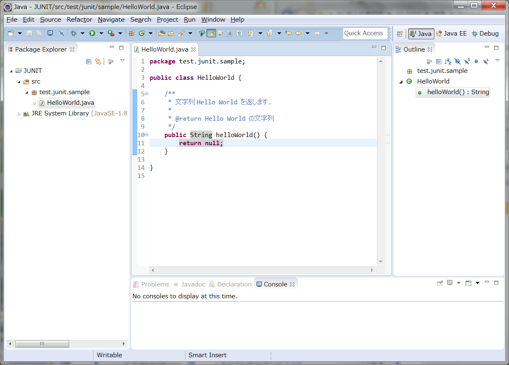
このクラスは helloWorld というメソッドを持ちます。
このメソッドは、呼ばれると文字列 "Hello World" を返します。
本当に返しますか？
では確認してみましょう。
（・・・mainメソッドを定義して呼ぼうなんて考えてはいけません。）
テストコードを書く
それでは簡単な方法でテストを作成していきます。
test フォルダの準備
その前に、まずテストコードを格納するフォルダを src とは別に test という名前で作成します。
テストコードも src フォルダに作成しても良いのですが、一般的には見通しを良くするために test という名前のフォルダを作成し
テストコードはこちらに格納するようにします。
test フォルダを作成するには次のようにします。
まず Package Explorer 上でプロジェクトを右クリックして、Properties を選択します。
Properties ダイアログが開かれるので、左側の一覧から「Java Build Path」を、右側のタブの中から「Source」タブを選択します。
さらに Source Folder に test フォルダを追加するために「Add Folder...」ボタンを押します。
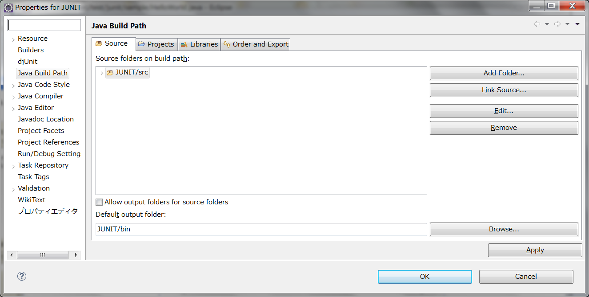
Source Folder に追加するフォルダを選択するダイアログが表示されますが、まだ test フォルダを作成していないので
「Create New Folder...」ボタンを押します。
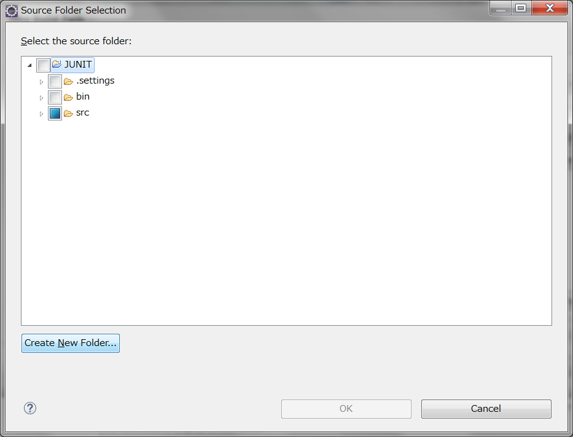
フォルダの名前に test と入力して Finish ボタンを押すと、次のような画面になるので
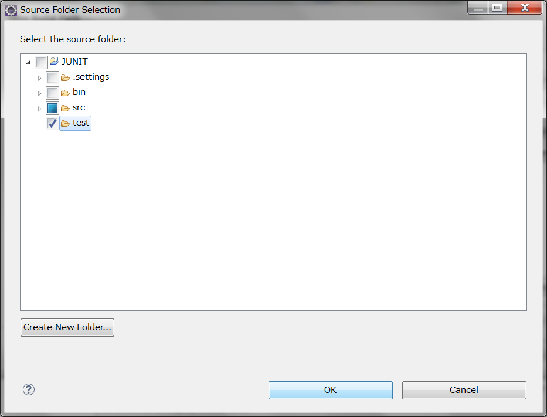
OK を押すと、次の画面のように Source Folder に test フォルダが追加されるので OK ボタンを押してください。
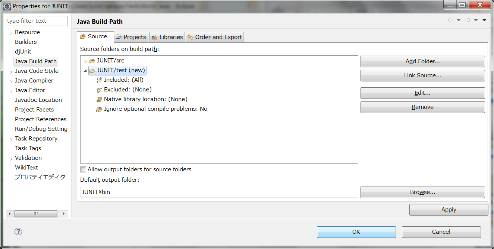
これで test フォルダが作成されました。この中に、テストコードを作成します。
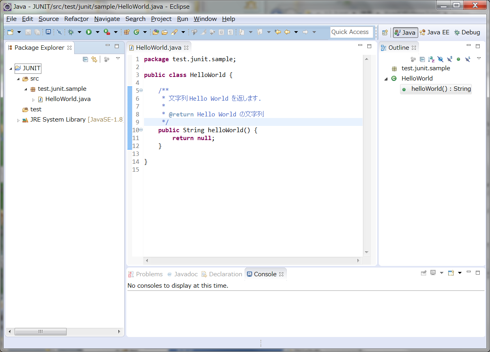
JUnit ライブラリの準備
JUnit を使用するには、JUnit のライブラリをプロジェクトに追加する必要があります。
JUnit のライブラリをプロジェクトに追加するには、まずは、先ほどと同じようにプロジェクトの Properties ダイアログを表示して
左側から「Java Build Path」を、右側から「Libraries」タブを選択します。
次に「Add Library...」ボタンを押します。
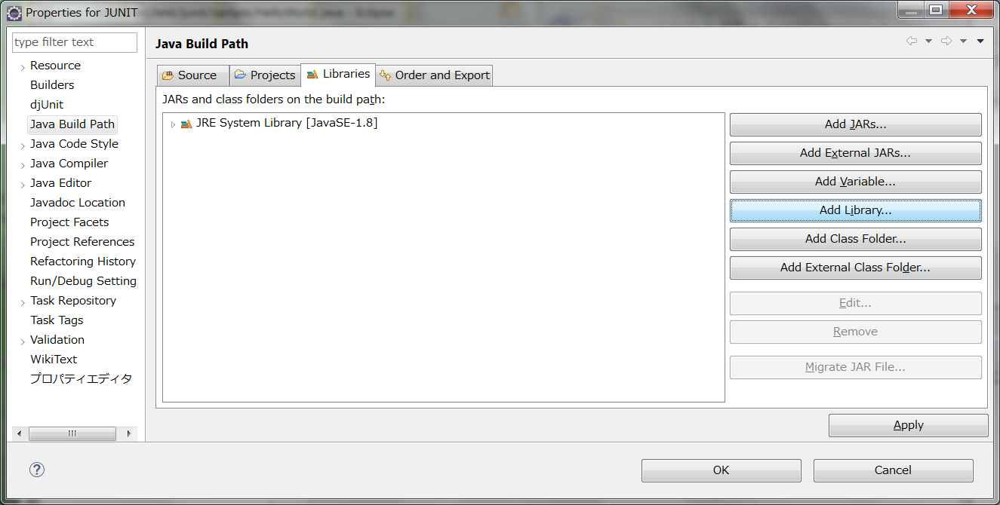
JUnit を選択して Next ボタンを押します。
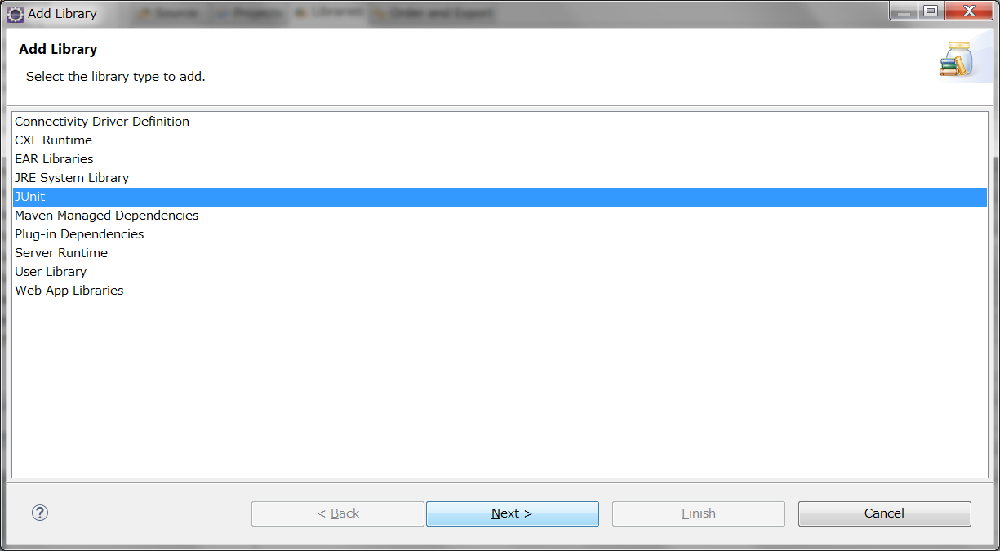
JUnit library version で「JUnit 4」を選択して Finish ボタンを押します。
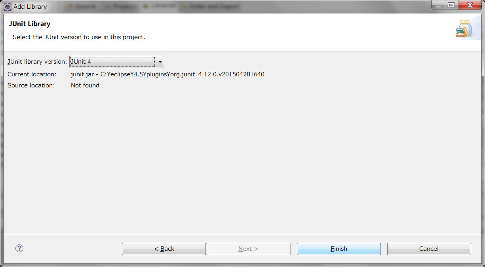
OK を押すと、JUnit のライブラリがプロジェクトに追加されます。
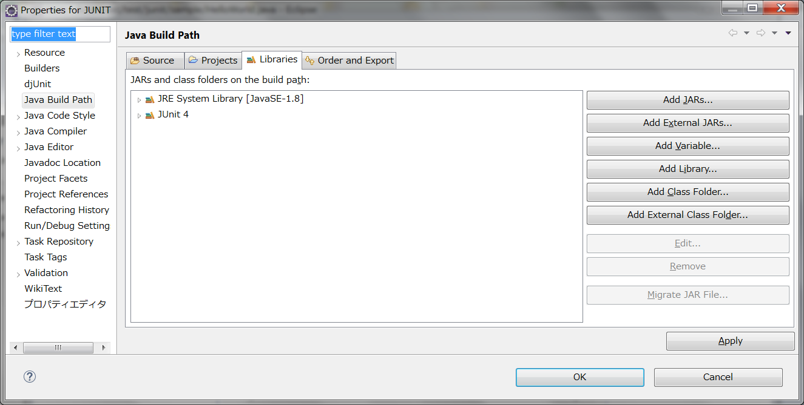
テストコードを書く
以上でテストコードを作成する準備は終わりました。
テストコード（テストクラス）は自分で一から作成することもできますが、既にテスト対象のソースがある場合は、
そのソースから自動生成することもできます。
テストコードを自動生成するには、パッケージエクスプローラでテスト対象のクラス（HelloWorld.java）を選択し、
右クリックして「新規 > JUnitテスト･ケース」を選択します。
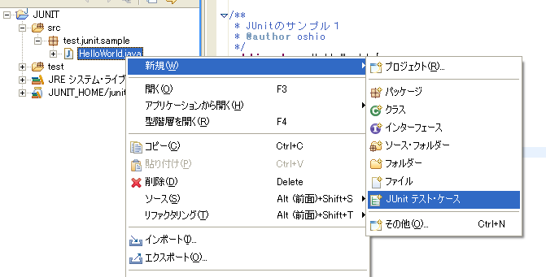
すると以下の画面が出ます。
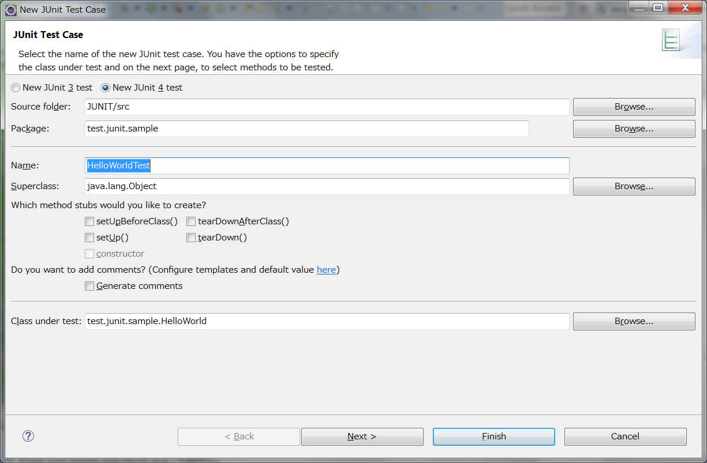
Source folder を JUNIT/src から JUNIT/test に変更して Next を押下します。
Package や Name はそのままでかまいません。
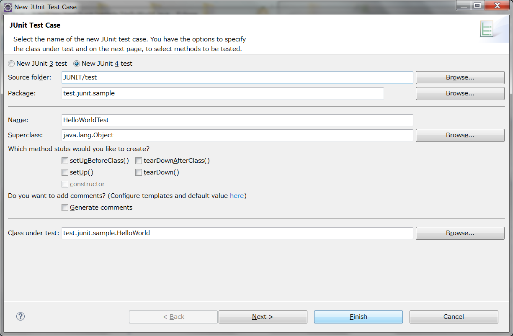
テストしたいメソッド（ここでは helloWorld）にチェックを入れ、Finish ボタンを押下します。
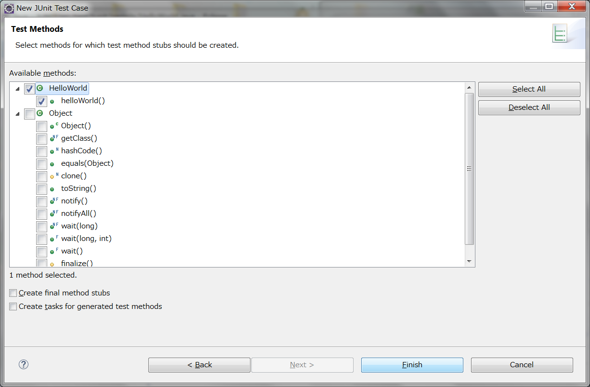
これで test フォルダに HelloWorldTest クラスが作成されました。
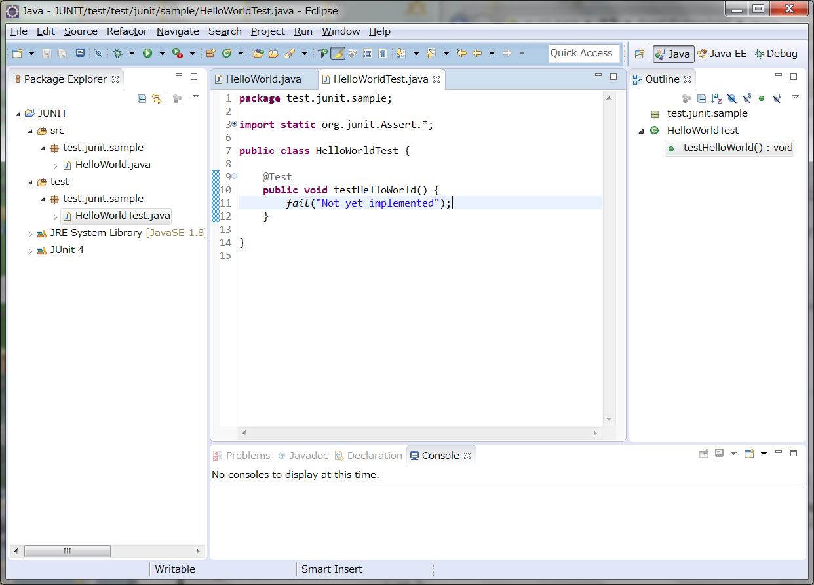
テスト用クラスには以下のようなルールがあります。
- テスト用クラスのクラス名は、"テスト対象クラス名 + Test" とする。
例）テスト対象クラス：HelloWorld の場合、テストクラスは HelloWorldTest
- テストメソッドのメソッド名は "testXXX" (XXXは対象メソッド名＋テスト内容を意図する名称) とする。
例）テスト対象メソッドが getName の場合、テストメソッドは testGetNameYYY となります。（YYY は任意）
- テストメソッドには @Test アノテーションを付与する。
この中で、必須なのは３番目のルールのみです。
最初の２つのルールは、JUnit3 までの必須ルールだったため今でも名残でこのようにする慣習になっていますが、必須ではありません。
先ほど自動生成したテストメソッドの中身を書き換えてみましょう。
まず helloWorld メソッドの仕様を確認してみましょう。
このメソッドは
文字列 "Hello World" を返す。
というのが仕様でした。
そこでテストメソッドは
testHelloWorldReturnedHelloWorld()
と "Hello World" という文字列が返されることを期待して名前を変更しましょう。
※テストメソッド名は、メソッド名からテスト内容が推量できるようなものをつけます。
ではテストメソッドを実装します。
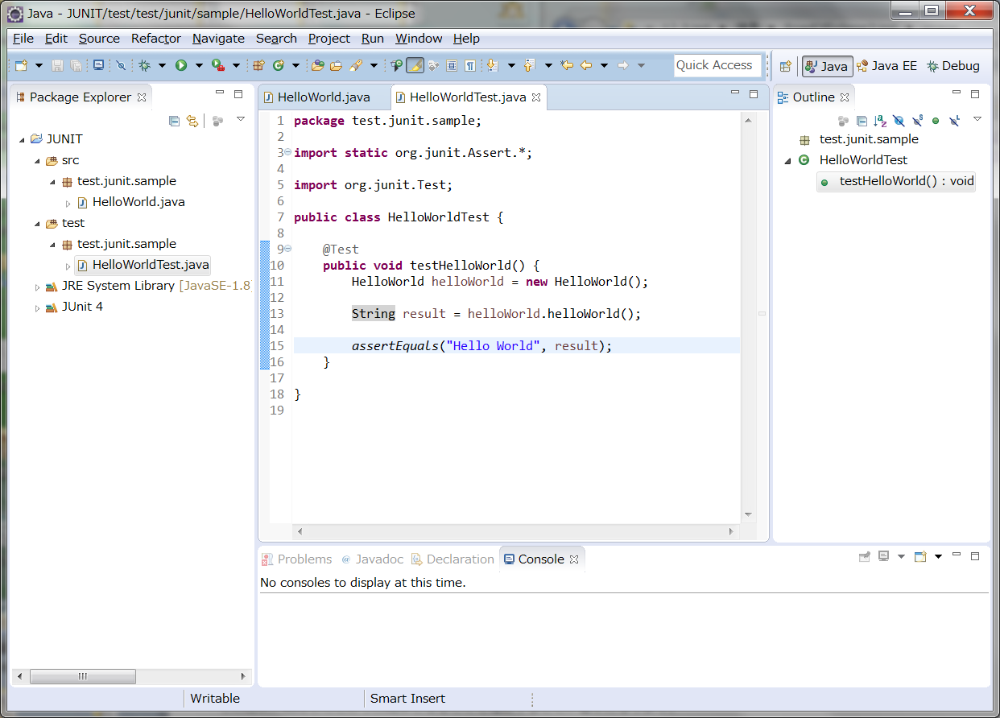
テスト対象クラスのインスタンスを作り、
テスト対象メソッドを実行し、返り値を取得します。
そして、その返り値が期待する "Hello World" であることを assertEquals メソッドを使って確認しています。
このように、JUnit のテストケースでは、テスト対象のメソッドを実行して、
その結果が期待したとおりの結果となることを確認することが基本になります。
assertEquals のような結果を確認するためのメソッドをアサーションメソッドと呼びます。
これらのアサーションメソッドは、 org.junit.Assert クラスに static メソッドとして実装されているため、
import static org.junit.Assert.*;
として、これらのアサーションメソッドを static インポートしています。
下記は、良く使うアサーションメソッドを抜粋したものになります。
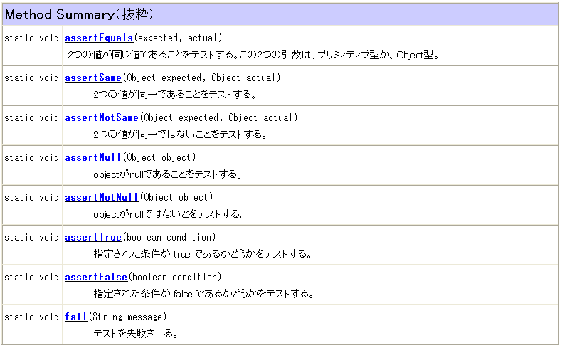
テストを実行して失敗させる
さて、テストメソッドの実装がすみましたので、テストを実行してみましょう。
テストを実行するには、テストクラスを右クリックして「実行 > JUnitテスト」を選択します。
図17 テスト実施
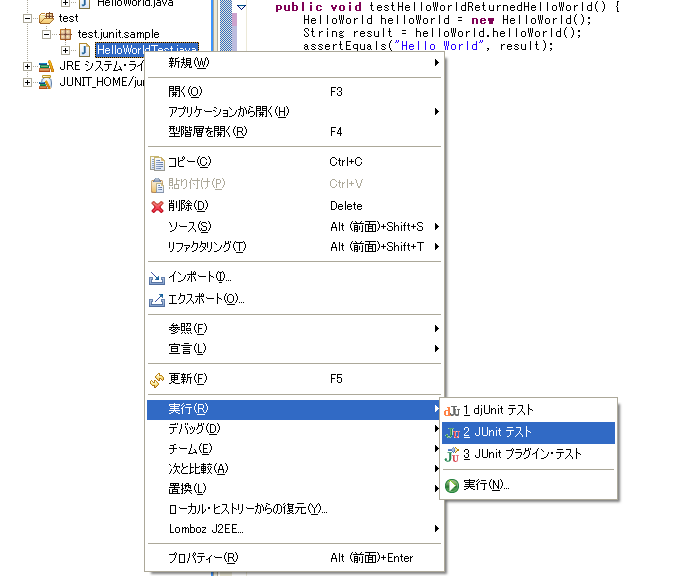
実行すると以下のような画面になります。
図18 テスト結果
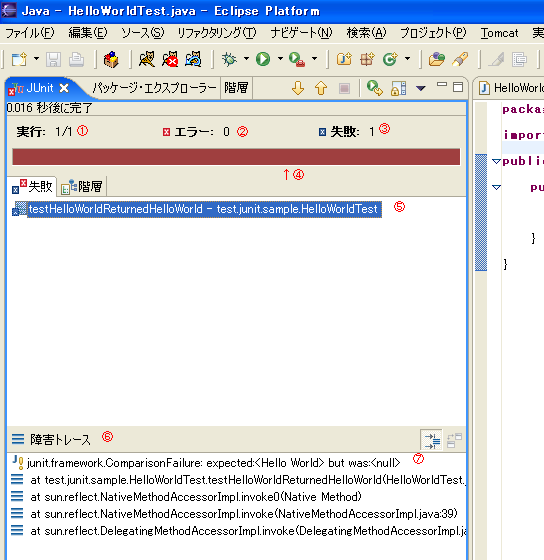
各項目の意味は以下の通りです。
① 実行したテストメソッド/テストクラス内の全テストメソッド
② エラーが発生したテストメソッド数（テストメソッド内で例外が発生するとエラーとなります。）
③ テストが失敗したメソッド数
④ 全テストが成功すると緑で、失敗したメソッドがあると赤になります。（エラーの場合も）
⑤ テストメソッド名です。テストクラスに複数テストメソッドがある場合は列挙され、
⑥ 選択すると次に説明する障害トレースがそれぞれのメソッドのものに変わります。
⑦ 失敗したメソッドのトレースです。（ダブルクリックすると、該当行を表示してくれます。）
⑧ 失敗した理由です。
さて、障害トレースを見てみましょう。
失敗した理由は
junit.framework.ComparisonFailure: expected:<Hello World> but was:<null>
・・・
とあります。期待しているのは "Hello World" だけど実際は null だと教えてくれています。
helloWorld メソッドを見てみると、実際に return null; としているので当然ですね。
正しい実装のソースコードを書く
テストが失敗することを確認したので次の段階に進みましょう。
テストが通るような実装をします。
helloWorld メソッドの return を以下のように修正し、保存して再び実行します。
public String helloWorld() {
return "HelloWorld";
}
前回と同じ事を行う場合は以下のボタンを押せば再び実行できます。（ショートカット：ctrl+F11）
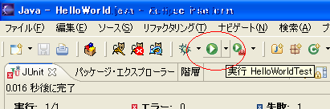
さてバーは緑色になりましたか？
なりませんね。トレースにはなんと出ていますか？
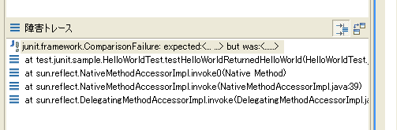
先ほどと違ってまったくわからないですね。
こういう場合はダブルクリックしてみてください。結果比較の画面が出てくれます。
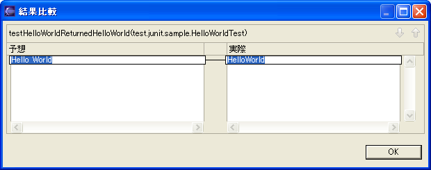
どうやらスペースが足りないようです。下記のようにもう一度直しましょう。
public String helloWorld() {
return "Hello World";
}
テストを成功させる
では成功したらどういう画面になるか見てみましょう。
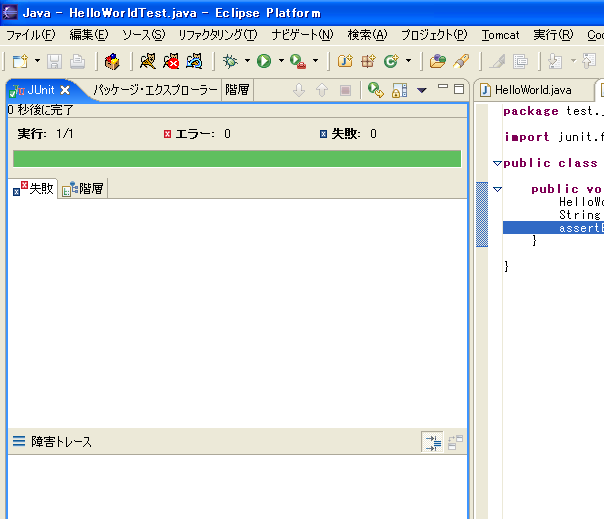
バーが緑になり、エラーも失敗も出てないですね。
ちなみにテストメソッドが複数ある場合、階層のタブで見ると成功したメソッドの情報がわかります。
テストはこのように「テスト → メソッドの実装 → テスト」といったように緑のバーが出るまで繰り返します。
また、ソースの修正を行う際にはどんな簡単な修正でも必ずテストを行います。
今回は単純に "Hello World" という文字列を返すだけでしたが、
実際は if 文などにより処理が分岐することが考えられます。
そのような場合はテストメソッドを複数作る必要があります。
たとえば、helloWorld メソッドが String の引数をとり、引数で渡した文字列を追加して返すメソッドだった場合、
testHelloWorldValueTakashi
testHelloWorldValueEmpty
testHelloWorldNull
などとテストを複数つくり、内容をわかりやすく名前をつけてください。
コメントも必要なだけ書きます。
テストメソッドの本文はわかり易さを重視します。
©日本インサイトテクノロジー株式会社